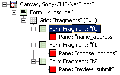
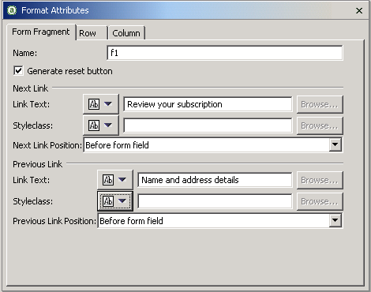

You can use form fragments to manage the display of forms that are too large to present on devices with small screens. MCS combines the results from each of the form fragments before the entire form data is submitted.
You create form fragments by inserting fragments into the content of a form (rows or columns).

MCS automatically orders form fragments in the grid from left to right, and from top to bottom. You use the fragment format attributes to define the text, position and style of the links to the previous and next fragments in the sequence. You can also choose whether or not to display a reset button on the fragment.

The simple processing sequence for this form example is:
If the user navigates backward or resets the fragment content, the next forward link action is saved again.
Related topic
Form instance data
Fragment attributes
Form fragments links in XDIME 2